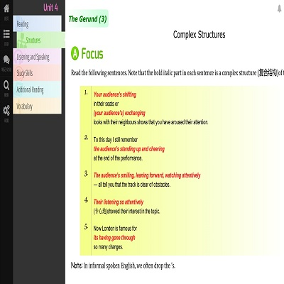

Project: [eTextbook]
启动: 2013-02
截至: Current
项目简介：利用AngularJS框架，结合jQuery、yeoman、grunt等工具，利用HTML、JavaScript及CSS等前端相关技术，基于Node.JS平台，进行高中教材英语电子书包的开发，以期完成能够提供内容、阅读器及书城三位一体的电子书包服务平台，目前处于开发阶段。
个人贡献：从项目需求调研、分析阶段开始，以及UI、原型设计阶段，是主要贡献者。目前项目处于开发后期，主要负责目前demo的部分模块及page的开发，如单词flash卡片模块，用JSON数据作为单词集合的包，利用AngularJS的$resource提供的RESTful服务，进行开发。其他如作业系统、通知系统以及逻辑分页、目录结构模块的开发，都是主要参与者。
详情请戳 »
